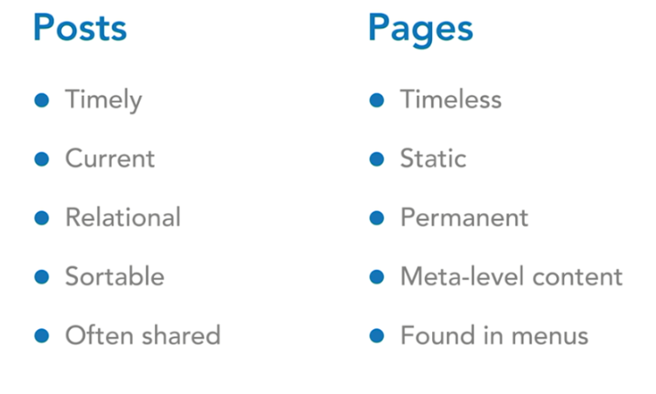

- មេរៀនទី ១ ៖ តើអ្វីជាWordPress?
- មេរៀនទី ២ ៖ WordPress Working
- មេរៀនទី ៣ ៖ របៀបតម្លើង WordPr...
- មេរៀនទី ៤ ៖ តើអ្វីជាDashboard?
- មេរៀនទី ៥ ៖ តើអ្វីជាPosts?
- មេរៀនទី ៦ ៖ តើអ្វីជាMedia?
- មេរៀនទី ៧ ៖ តើអ្វីជាPages?
- មេរៀនទី ៨ ៖ តើអ្វីជាComments?
- មេរៀនទី ៩ ៖ តើអ្វីជាAppearance...
- មេរៀនទី ១០ ៖ តើអ្វីជាPlugins...
- មេរៀនទី ១១ ៖ តើអ្វីជាUsers?
- មេរៀនទី ១២ ៖ តើអ្វីជាTool?
- មេរៀនទី ១៣ ៖ តើអ្វីជាSetting...
- របៀបបង្កើត Theme ដោខ្លួនងឯ ជាម...
- របៀបហៅ Function style and Scri...
- របៀបបង្កើត menu នៅក្នុង Wor...
- របៀប Query File តាម Category
- របៀប Query File តាម slug ឈ្មោ...
- របៀបបង្កើត Costume Post Type
- របៀបបង្កើត Custom Field
- វិធីបង្កើត Taxonomies
- របៀបបង្កើត Widgets
- របៀបបង្កើត Display Metabox
- វិធីបង្កើត Build Plugin
មេរៀនទី ៧ ៖ តើអ្វីជាPages?
Page នៅក្នុង WordPress ជាធម្មតាសំដៅទៅលើប្រភេទបង្ហាញទំព័រ។ វាគឺជាផ្នែកមួយនៃ WordPress ដែលបានកំណត់ជាមុន។ WordPress បានចាប់ផ្តើមជាឧបករណ៍សរសេរ
Blog ដ៏សាមញ្ញមួយដែលអនុញ្ញាតឱ្យអ្នកប្រើប្រាស់សរសេរអត្តបទបង្ហាញ។
ភាពខុសគ្នារវាង Posts vs Pages មានដូចខាងក្រោម៖
